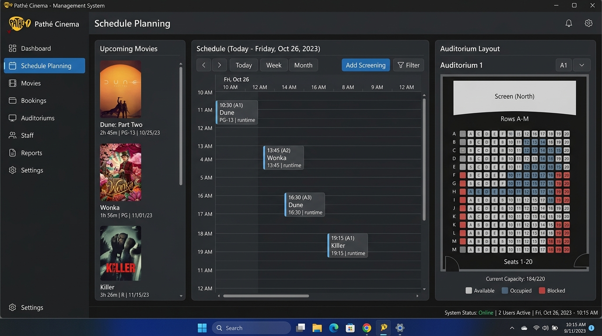
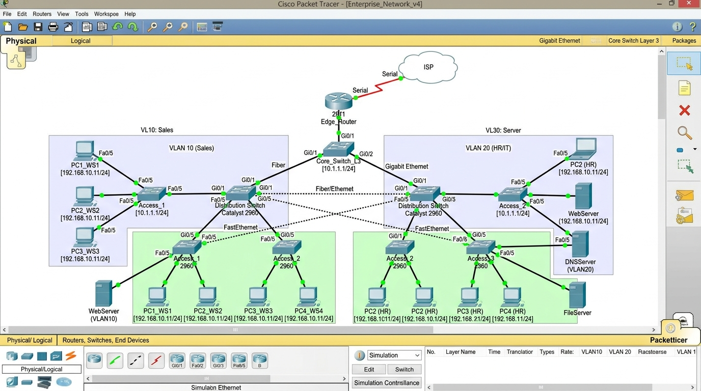
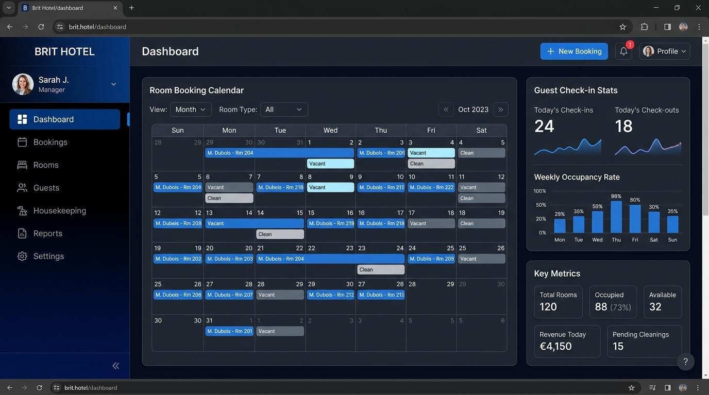

Façonnez votre avenir avec
l'Excellence Numérique
Bienvenue sur le portfolio professionnel de Moundhir Bouachiba, étudiant en 2ème année de BTS Services Informatiques aux Organisations (Option SLAM) au Lycée Lamartine à Mâcon. Retrouvez mes réalisations logicielles, mes compétences techniques, mes stages et ma veille technologique.
Moundhir Bouachiba
Développeur C# .NET, PHP/Laravel, SQL Server & Web • Mâcon (71)
Développement & Logiciels
Conception d'applications métiers orientées objet, applications lourdes WinForms en C#, architectures MVC en PHP Laravel, composants Vue.js et intégration d'API REST sécurisées.
Bases de Données & Cybersécurité
Modélisation relationnelle (MCD/MLD), administration de bases SQL Server et MySQL Workbench, procédures stockées Transact-SQL, ORM Entity Framework & Eloquent, et sécurisation contre les failles OWASP.
Infrastructure & Méthodologie
Modélisation réseau sous Cisco Packet Tracer, segmentation logique par VLAN, routage IP, déploiement web sur serveurs Apache/FTP et travail collaboratif en mode projet Agile / Git.
Projets Phares (PPE)
Aperçu des situations professionnelles majeures développées au cours du cursus BTS SIO.

Gestion de Cinéma (Pathé Mâcon)
Développement d'une plateforme métier en C# WinForms et PHP/MySQL pour la planification automatisée des séances et la consultation des films.

Infrastructure Réseau & Sécurité
Modélisation et mise en place d'une architecture réseau sécurisée avec segmentation par VLANs, routage Router-on-a-stick et adressage sous Cisco Packet Tracer.

PPE 3/4 : Solution Métier (Brit Hotel)
Projet de synthèse de 2ème année interconnectant une solution de réservation web moderne Laravel avec un logiciel back-office C# utilisant Entity Framework.